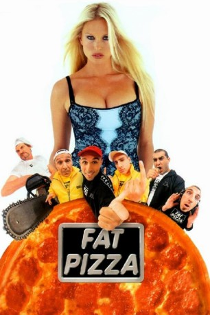

#11473 Fat Pizza
 
 IMDB-Wertung: 5.9 / 10
IMDB-Wertung: 5.9 / 10  Metascore: 0
Metascore: 0 
Die Pizzajungen Pauly (Paul Fenech), Sleek (Paul Nakad), und Davo (Jason "Jabba" Davis) geraten von einem Missgeschick ins nächste. Pauly wird in einen Kampf gegen das Maskottchen eines verfeindeten Fast-Food-Unternehmens verwickelt und zieht gleichzeitig den Zorn einer Gang aus Kleinwüchsigen auf sich, weil er deren Behinderten-Toilette benutzt. Sleek, ein libanesischer Rapper, ist auf der Flucht vor den Frauen, die er böse beleidigt hat - und das sind einige - und wird gleichzeitig von rassistischen Cops gejagt, die ihm persönlich die Schuld an der Krise im Mittleren Osten geben. Davo, der neue im Team, hat es da einfacher. Er ist nur ein kleiner Junkie auf der Suche nach dem nächsten Kick
Jahr: 2003
Dauer: 93 Minuten
FSK: 18
Land: Australien Studio: EuroVideoTonspuren:
Untertitel:
Auflösung: SD (656x368) Größe: 1402 MB
Genre: Action, Thriller, Komödie, Abenteuer, Krimi
Regisseur: Paul Fenech
Drehbuch: Paul Fenech, Tahir Bilgic, Paul Fenech
Soundtrack: Lee John Blackmore
Darsteller:
- Tahir Bilgic als Habib Halal
 Angus Sampson als Junky
Angus Sampson als Junky- John Boxer als Bobo Gigliotti
- Jabba als Davo Dinkum / Davo's Grandad
- Linden Goh als Lachlan
- Waseem Khan als Waseem
- Bruno Xavier als Gandhi
- Angry Anderson als Bikie
 Rebel Wilson als Toula
Rebel Wilson als Toula- Alan Flower als Greenie
- Krista Vendy als Secretary
- Cass Cumerford als The Colonel
- Craig Behenna als The Koala
- Annalise Braakensiek als Claudia Macpherson
- Will Hall als Bonger
- Theo Stephens als Krishna Bully
- Gandhi MacIntyre als Krishna Guru
- Michael Craig als Judge
- Greg Poppleton als Window Washer
- John Batchelor als Bouncer
- Brigid O'Sullivan als Door Bitch
- Red Symons als Bumpkin Cop
- Shane Porteous als Doctor
- Costas Kilias als Russian Boss
- Anna Cominos als Dimita
- Hollie Lee als Toula's Gang (uncredited)
- Paul Fenech als Pauly Falzoni / Alfredo Falzoni
- Rob Shehadie als Rocky
- Bill Bentley als Bum
- Sam Ford als Dead Guy
- Joel Heddrick als Blind Guy
- Renzo Bellato als Wheelchair Guy
- Arthur Serevetas als Fighting Arthur
- Paul Nakad als Sleek the Elite
- Katrina Spadone als Rocky's Girlfriend
- Paul Bates als Postie
- Harry Hudson als Old Guy
- Jamieson Hunt als Motorbike Rider
- Jakalene Malanovic als Shazza
- Luke Ventura als Kid
- Jesse Ventura als Kid
- Joshua Ventura als Kid
- Scott Falzon als Kid
- Paul Falzon als Kid
- Bernard King als Leather Nut
- Albin Pahernik als Car Crash Guy
- Murray Harman als Murray the Cop
- Allen Cribbs als Ambo
- Chris McMannus als Ambo
- Maria Venuti als Mama Gigliotti
Datei: X:\FSK18-2000-2009\Fat Pizza (2003, FSK18, 656x368).avi seit 13.07.2019
Festplatte: FSK18
 Es gibt insgesamt 106 Filme in der Gruppe 'FSK18-2000-2009'
Es gibt insgesamt 106 Filme in der Gruppe 'FSK18-2000-2009'